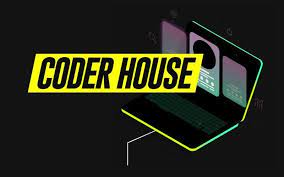

iniciandonos en programación
Una de las profesiones más demandadas en la actualidad es la de programador/a.
A día de hoy, los programadores son los que crean tecnología y le dan futuro, es decir, la evolucionan.
El punto fuerte de las empresas más importantes a nivel mundial y de las startups es la programación.
Por lo que aprender programación te dará la oportunidad de entrar en el sector tecnológico pudiendo desarrollar software, sitios web, video-juegos, redes neuronales, aplicaciones e incluso inteligencia artificial entre otras muchas cosas si se quiere uno seguir puliendo en la programacion, hecho que como programador, deberas tener aferrado a tu mind-set para ser competenete en un hambiente tan dinamico y vertiginoso, pero asi como resulta complejo mantener el ritmo de la tecnologia, por su parte, el beneficio es igual que interesante como su curva de dificultad ya que, te abre el campo de las oportunidades laborales.
Seguramente esto ya lo sabías, lo que realmente te interesa es saber cómo empezar, saber cuál es la puerta que debes abrir para conseguir estar dentro del mundo tech e impulsar todo tu potencial compartiéndolo con tu equipo y empresa.
Para brindarte una gran experiencia introductoria dentro de la comunidad coder, te presentamos la mejor plataforma de aprendizaje sobre tecnologia:

Qué tienes que saber para empezar a programar
Lo realmente importante es comprender que para saber programar no hay que centrarse en aprender un lenguaje de programación, sino en entender el proceso de programación en sí, es decir, aprender a programar.
Asi como aprender a programar desde los fundamentos nos va a proporcionar grandes instrumentos para que a posteriori nuestro aprendizaje se torne mucho mas fluido e intuitivo, el tener una ruta de aprendizaje para esos primeros pasos dentro de este interminable mundo, va a tener un gran impacto en la cantidad y calidad de conocimientos que puedas comprender y dominar.
¿Qué es lo primero que se debe aprender para programar?
Otros conocimientos básicos que se necesita para ser programador
Saber encontrar bugs.
Ejercitar el pensamiento lógico.
Instruirse con algoritmos y estructuras de datos.
Conocimientos avanzados de sistemas operativos.
Elaborar trabajos prácticos.
ahora bien, ¿que podemos hacer con todas estas palabras raras?...
Aprender a trabajar con algoritmos:
La programación se basa en resolver problemas utilizando una secuencia de pasos conocida como algoritmo. Plantear un algoritmo es como escribir
los pasos para hacer una receta antes de ponerse a cocinar y plasmar ese algoritmo con lenguaje de programación sería como utilizar las
herramientas de cocina necesarias y hacer la comida. El algoritmo te ayuda a planificar cómo resolver el problema y el lenguaje de programación
te permite ejecutar la solución.
Conocer los conceptos básicos:
Hay una serie de conceptos básicos que son comunes a todos los lenguajes como: ciclos, variables, estructuras de control, tipos de datos,
funciones, etc. Por lo tanto, como son conceptos que comparten todos los lenguajes es suficiente con que los aprendas una vez. Después tendrás
que amoldarte a cada lenguaje y aprender su sintaxis propia como el uso del paréntesis, punto y coma, saltos de línea o palabras clave.
Entender la diferencia entre backend y frontend:
Centrándonos en el desarrollo y diseño web hay que diferenciar el frontend del backend:
El frontend es la parte de la interfaz que vemos mientras navegamos. Lo que se busca es generar una buena experiencia de usuario, inmersión y usabilidad. Es la parte creativa del diseño web donde se deciden qué colores, fuentes, imágenes y otros posibles recursos que tendrá el sitio web o aplicación y que estos se vean bien en todos los dispositivos. Para ellos se utiliza:
HTML es un lenguaje de marcado de hipertexto que le da instrucciones al navegador sobre cómo estructurar y mostrar el contenido.
CSS también es un lenguaje de marcado que, en este caso, se utiliza para maquetar y establecer el diseño de la web o interfaz.
JavaScript permite aportar funcionalidad y animar ciertas secciones o elementos de los sitios web o las interfaces.
El backend es todo lo que está detrás del sitio web y que hace que esta funcione correctamente.
Coge los datos, los procesa y los envía al usuario. También se encarga de las consultas o peticiones a la base de datos o la conexión con el servidor. Las actualizaciones de información son constantes y, por ello, es importante que la persona que se encarga de la parte de back asegure una buena capacidad de respuesta y velocidad óptima del sitio web.
El lenguaje más recomendado para aprender programación es:
Vue es un framework open source de JavaScript que permite construir interfaces de usuarios de una forma muy sencilla. Para trabajar con esta herramienta es importante conocer muy bien JavaScript, saber trabajar con callbacks, promesas u objetos, entre otros.
Node.js es un entorno de tiempo de ejecución de JavaScript, es decir, es un sistema que suministra servicios para los procesos de un programa de computadora que se está ejecutando. En este caso, Node.js incluye todo lo que se necesita para ejecutar un programa escrito en JavaScript y ayuda a solucionar problemas.